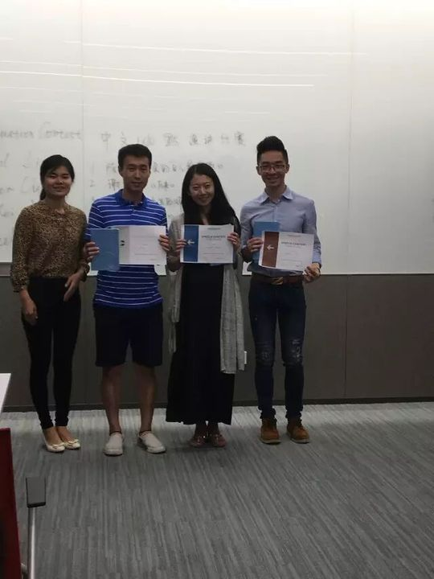
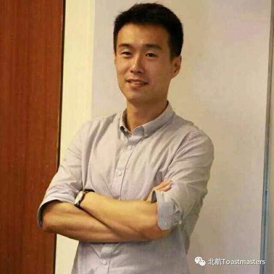
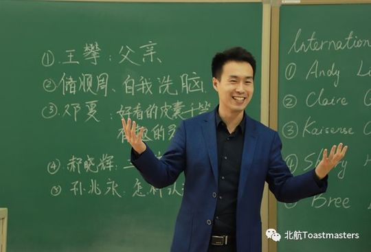
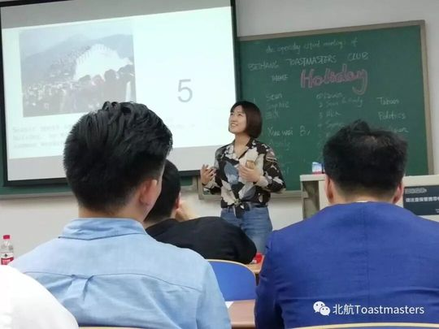
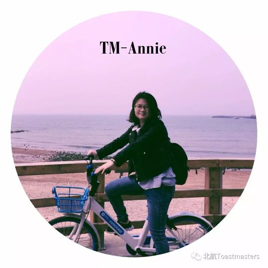
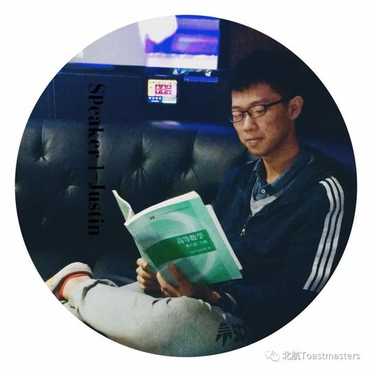
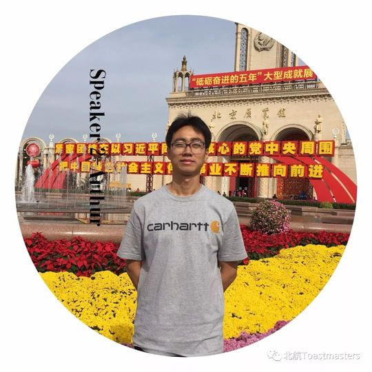
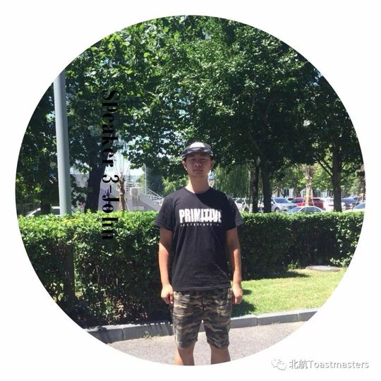
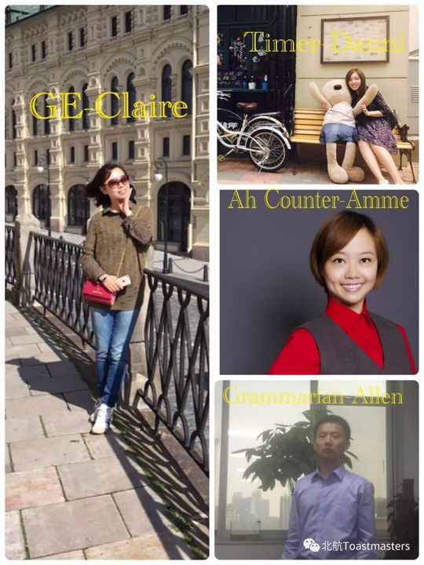

Chad
来自兄弟俱乐部的资深嘉宾与区域负责人，常以演讲、点评与评委身份为北航头马传经送宝。
嘉宾活跃 2015–2018出现 5 次 · 5 篇2 场演讲
Chad 并非北航Toastmasters的注册会员，而是一位在俱乐部记录中反复出现的外部资深头马人。最早的身影出现在2015年8月的第106次会议——他与来自AthenaTMC的Rachel一同担任比赛评委，为北航的比赛把关打分。这也说明在那时，他已是周边俱乐部里被信任的资深成员。
此后数年，他与北航TMC始终保持着密切往来。2017年12月的"Choice"主题例会上，他担任总点评官（General Evaluator），统筹整场会议的点评工作；2018年1月的"Unexpected"例会上，他亲自登台做备稿演讲，用"幸福哪怕只是烟花般绽放的一瞬，只要珍惜，也能成为永恒"这样温暖的句子打动听众。同年7月的"Games"主题例会，他又作为分享嘉宾带来"How to Make a Prepared Speech"的主题分享，把如何打磨一篇备稿演讲的经验传授给年轻会员，被俱乐部亲切地称为"Charming Chad"。
作为区域负责人（Area Director），他还在2018年4月北航TMC的开放日（Open Day）上致欢迎辞，并向来宾介绍国际演讲会的体系。从评委到点评官，从演讲者到导师式的分享者，Chad 以多种身份持续为北航头马输送养分，是俱乐部成长路上一位可敬的"外援"与引路人。
完整足迹 · 5 次出现（点开，每条可跳转原文）
- 2015-08-19第106次 · 担任比赛评委
- 2017-12-01第186次 · 担任总会议评估人
- 2018-01-05第188次 · 做备稿演讲（旅行/幸福主题）
- 2018-04-23在开放日致欢迎辞并介绍头马国际
- 2018-07-26第206次 · 在206次会议分享How to Make a Prepared Speech并做培训
做过的演讲 · 2 场
围绕"意外"主题，讲述生命中总有令人铭记的意外瞬间，幸福哪怕短如烟花，只要珍惜也能成为永恒。
作为分享嘉宾讲解如何打磨一篇备稿演讲，向会员传授演讲准备的方法与经验。
担任过的会议角色
比赛评委 (Judge)总点评官 (General Evaluator)嘉宾分享/欢迎致辞×2
里程碑
- 2015-08-19 首次出现：担任比赛评委 ↗代表AthenaTMC到北航TMC第106次会议任比赛评委。
- 2017-12-01 担任总点评官 ↗在"Choice"主题例会出任General Evaluator。
- 2018-01-05 登台做备稿演讲 ↗在"Unexpected"例会以"意外"为题发表备稿演讲。
- 2018-04-20 开放日致欢迎辞 ↗以区域负责人身份在北航TMC开放日致辞并介绍国际演讲会。
- 2018-07-20 分享演讲技巧 ↗在"Games"例会分享"How to Make a Prepared Speech"。
为俱乐部做的事
- 作为外部资深头马人多次为北航TMC担任比赛评委，参与赛事评判
- 在例会中担任总点评官（GE），统筹并提升点评质量
- 以区域负责人身份在开放日致欢迎辞，向来宾介绍Toastmasters International体系
- 以"How to Make a Prepared Speech"等主题分享，向会员传授备稿演讲方法，被称为"Charming Chad"
- 通过演讲示范（如"Unexpected"）为会员树立榜样
照片墙 · 时间线
共 23 帧，其中 8 帧已用人脸识别确认是本人（带 ✓）。
 ✓
✓ ✓
✓ ✓
✓ ✓
✓ ✓
✓
✓
✓
✓











“Even if happiness only instant blossom like fireworks, if you go to cherish, so, this also can become the eternal moment.”